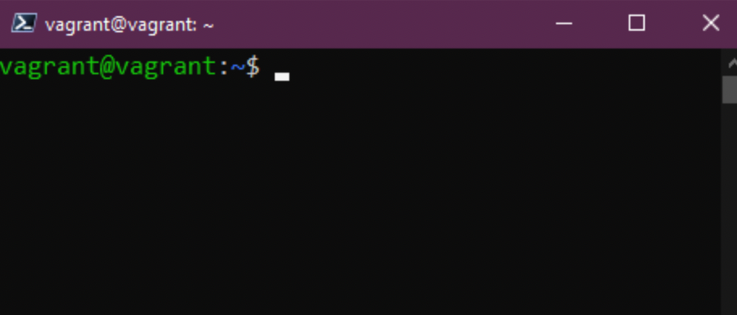

Linux Commands for DevOps (Actually everyone)
We mentioned on the Previous Section that we are going to be spending a lot of time in the terminal. We will definitely want to get comfortable living in the terminal moving forward but there's nothing to be afraid of! In a short time, you'll find yourself being more productive in terminal and you'll get there with practice.
I also mentioned that with our vagrant provisioned VM we can use vagrant ssh and gain access to our box. You will need to be in the same directory as we provisioned it from.
For SSH you won't need the username and password, you will only need that if you decide to login to the Virtual Box console.
This is where we want to be as per below:

Furthermore, if you'd like a small sandbox to test these linux commands you can also use an instant terminal in the browser.
Commands
Obviously I cannot cover all the commands here, there are pages and pages of documentation that cover these but also if you are ever in your terminal and you just need to understand options to a specific command we have the man pages (short for manual). We can use this to go through each of the commands we touch on during this post to find out more options for each one. We can run man man which will give you the help for manual pages. To escape the man pages you should press q in order to quit from this screen.
sudo If you are familar with Windows and the right click run as administrator we can think of sudo as very much this. When you run a command with this command you will be running it as root it will prompt you for the password before running the command. This basically allows you to run any command with privileged levels and should be used with caution.
For one off jobs like installing applications or services you might need that sudo command but what if you have several tasks to deal with and you want to live as sudo for a while? This is where you can use sudo su again the same as sudo once entered you will be prompted for your root password. In a test VM like ours this is fine but I would find it very hard for us to be rolling around as root for prolonged periods, bad things can happen. To get out of this elevated position you simply type in exit or use the shorcut CTRL + D.
Using clear will help you to keep your terminal clean as we continue prompting more commands in terminal. This obviously can be ahieved by typing the clear command which is going to clear the screen of all previous commands, but you can also type CTRL + L (including MacOS) as a quick shortcut to achieve the same result.
Let's now look at some commands where we can actually create things within our system and then visualise them in our terminal, first of all we have mkdir this will allow us to create a folder in our system. With the following command we can create a folder in our home directory called Week-01 mkdir Week-01
With cd this allows us to change directory, so for us to move into our newly created directory we can do this with cd Week-01 tab can also be used to autocomplete the directory available. If we want to get back to where we started we can use cd ..
rmdir allows for us to remove the directory, if we run rmdir Week-01 then the folder will be removed (note that this will only work if you have nothing in the folder)
I am sure we have all done it where we have navigated to the depths of our file system to a directory and not known where we are. pwd gives us the print out of the working directory, pwd as much as it looks like password it stands for print working directory.
We know how to create folders and directories but how do we create files? We can create files using the touch command if we were to run touch Week-01 this would create a file. Ignore mkdir we are going see this again later.
ls I can put my house on this, you will use this command so many times, this is going to list the all the files and folders in the current directory. Let's see if we can see that file we just created.
How can we find files on our Linux system? locate is going to allow us to search our file system. If we use locate Week-01 it will report back that location of the file. Bonus round is that if you know that the file does exist but you get a blank result then run sudo updatedb which will index all the files in the file system then run your locate again. If you do not have locate available to you, you can install it using this command sudo apt install mlocate
What about moving files from one location to another? mv is going to allow you to move your files. Example mv Week-01 DevOpsTraineeProgram will move your file to the DevOpsTraineeProgram folder.
We have moved our file but what if we want to rename it now to something else? We can do that using the mv command again... We can simply use mv Week-01 Week-01 to change to upper case or we could use mv Week-01 AnotherWeek to change it altogether, now use ls to check the file.
Enough is enough, let's now get rid (delete) of our file and maybe even our directory if we have one created. Introducing the rm command. Simply by running rm AnotherWeek will remove our file. We will also use quite a bit rm -R which will recursively work through a folder or location. We might also use rm -R -f to force the removal of all of those files. Be careful though! If you run rm -R -f / and you decide to add sudo at this specific command, you might as well say goodbye to your system! Always beware of the type of command you're running in terminal, specially when using a priviledged or elevated command with sudo.
We have looked at moving files around but what if I just want to copy files from one folder to another, simply put its very similar to the mv command but we use cp (short for copy). We can now run the command cp Week-01 Desktop
We have created folders and files but we haven't actually put any contents into our folder, we can add contents a few ways but an easy way is echo we can also use echo to print out a lot of things in our terminal, I personally use echo a lot to print out system variables to know if they are set or not at least. we can use echo "Hello #DevOpsTraineeProgram" > Week-01 and this will add this to our file. We can also append to our file using echo "Commands are fun!" >> Week-01
Another one of those commands you will use a lot! cat short for concatenate. We can use cat Week-01 to see the contents inside the file. Great for quickly reading those configuration files.
If you have a long complex configuration file and you want or need to find something fast in that file vs reading every line then grep is your friend, this will allow us to search your file for a specific word using cat Week-01 | grep "#DevOpsTraineeProgram"
If you are like me and you use that clear command a lot then you might miss some of the commands previously ran, we can use history to find out all those commands we have run prior. history -c will remove the history.
When you run history and you would like to pick a specific command you can use !3 to choose the 3rd command in the list.
You are also able to use history | grep "Command to search for something specific.
On servers to trace back when was a command executed, it can be useful to append the date and time to each command in the history file.
The following system variable controls this behaviour:
HISTTIMEFORMAT="%d-%m-%Y %T "
You can easily add to your bash_profile:
echo 'export HISTTIMEFORMAT="%d-%m-%Y %T "' >> ~/.bash_profile
So as useful to allow the history file grow bigger:
echo 'export HISTSIZE=100000' >> ~/.bash_profile
echo 'export HISTFILESIZE=10000000' >> ~/.bash_profile
Need to change your password? passwd is going allow us to change our password. Note that when you add your password in like this when it is hidden it will not be shown in history however if your command has -p PASSWORD then this will be visible in your history.
We might also want to add new users to our system, we can do this with useradd we have to add the user using our sudo command, we can add a new user with sudo useradd NewUser
Creating a group again requires sudo and we can use sudo groupadd DevOps then if we want to add our new user to that group we can do this by running sudo usermod -a -G DevOps -a is add and -G is group name.
How do we add users to the sudo group, this would be a very rare occassion for this to happen but in order to do this it would be usermod -a -G sudo NewUser
Permissions
read, write and execute are the permissions we have on all of our files and folders on our Linux system.
A full list:
- 0 = None
--- - 1 = Execute only
--X - 2 = Write only
-W- - 3 = Write & Exectute
-WX - 4 = Read Only
R-- - 5 = Read & Execute
R-X - 6 = Read & Write
RW- - 7 = Read, Write & Execute
RWX
You will also see 777 or 775 and these represent the same numbers as the list above but each one represents User - Group - Everyone
Let's take a look at our file. ls -al Week-01 you can see the 3 groups mentioned above, user and group has read & write but everyone only has read.
We can change this using chmod you might find yourself doing this if you are creating binaries a lot on your systems as well and you need to give the ability to execute those binaries. chmod 750 Week-01 now run ls -al Week-01 if you want to run this for a whole folder then you can use -R to recursively do that.
What about changing the owner of the file? We can use chown for this operation, if we wanted to change the ownership of our Week-01 from user vagrant to NewUser we can run sudo chown NewUser Week-01 again -R can be used.
A command that you will come across is awk where this comes in real use is when you have an output that you only need specific data from. like running who we get lines with information, but maybe we only need the names. We can run who | awk '{print $1}' to get just a list of that first column.
If you are looking to read streams of data from standard input, then generates and executes command lines; meaning it can take output of a command and passes it as argument of another command. xargs is a useful tool for this use case. If for example I want a list of all the Linux user accounts on the system I can run. cut -d: -f1 < /etc/passwd and get the long list we see below.
If we want to compact that list I can do so by using xargs in a command like this cut -d: -f1 < /etc/passwd | sort | xargs
I didn't mention the cut command either, this allows us to remove sections from each line of a file. It can be used to cut parts of a line by byte position, character and field. The cut -d " " -f 2 list.txt command allows us to remove that first letter we have and just display our numbers. There are so many combinations that can be used here with this command, I am sure I have spent too much time trying to use this command when I could have extracted data quicker manually.
Also to note if you type a command and you are no longer with happy with it and you want to start again just hit control + c and this will cancel that line and start you fresh.
Resources
This is a pretty heavy list already but I can safely say that I have used all of these commands in our day to day, be it from an administering Linux servers or in my Linux Desktop, it is very easy when you are in Windows or macOS to navigate the UI but in Linux Servers you won't find pretty UIs, they are simply not there. Everything is done through the terminal.
I do also highly recommend completing the course over KodeKloud here.
We will touch a few of these topics over the next sections but feel free to complete those and send over your progress through a screenshot if you complete it!
See you in the Next Section